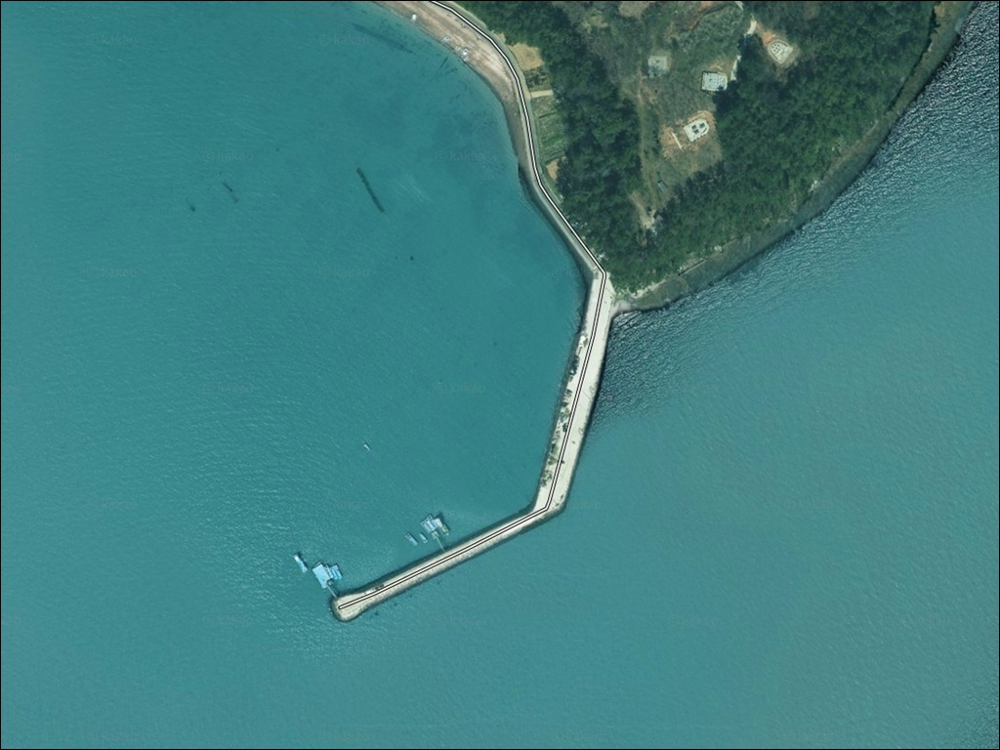
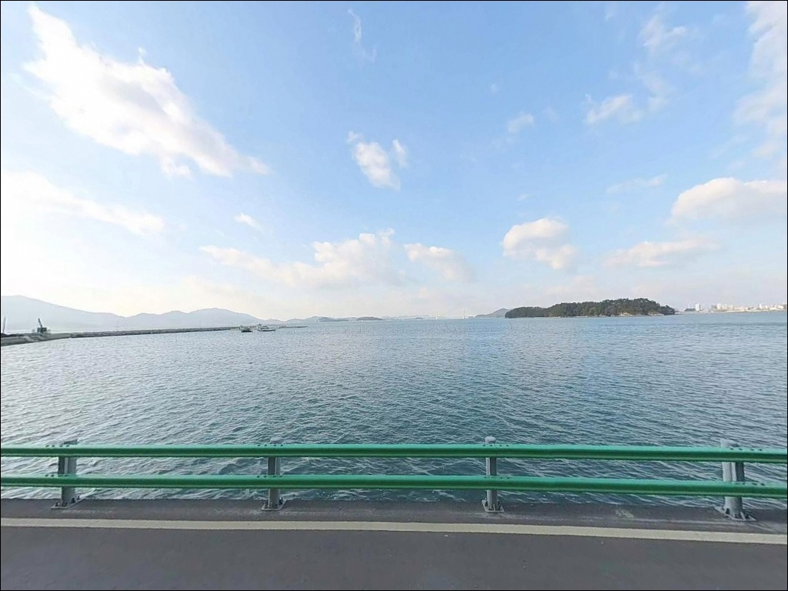
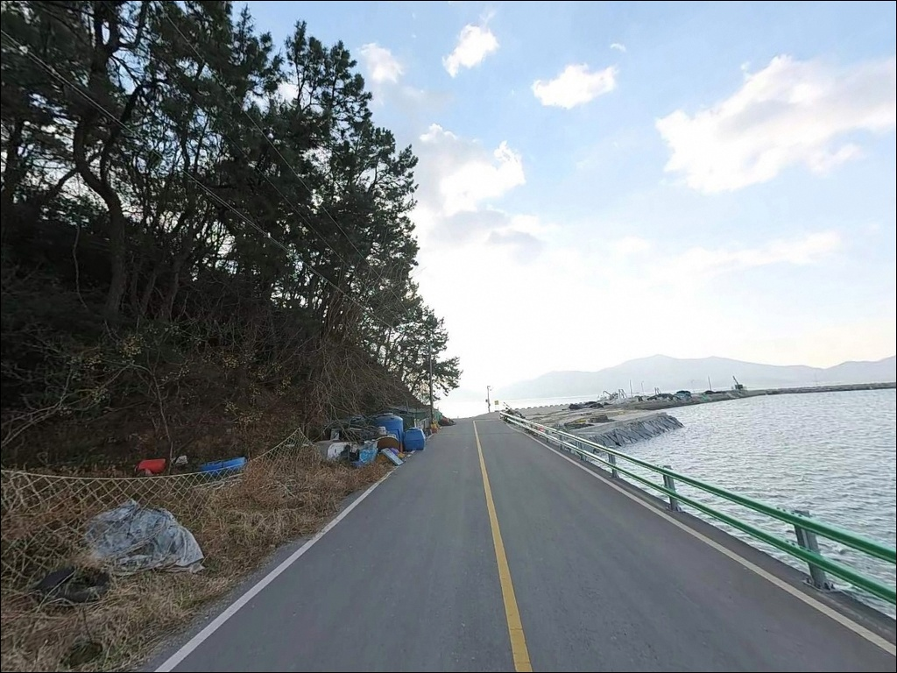
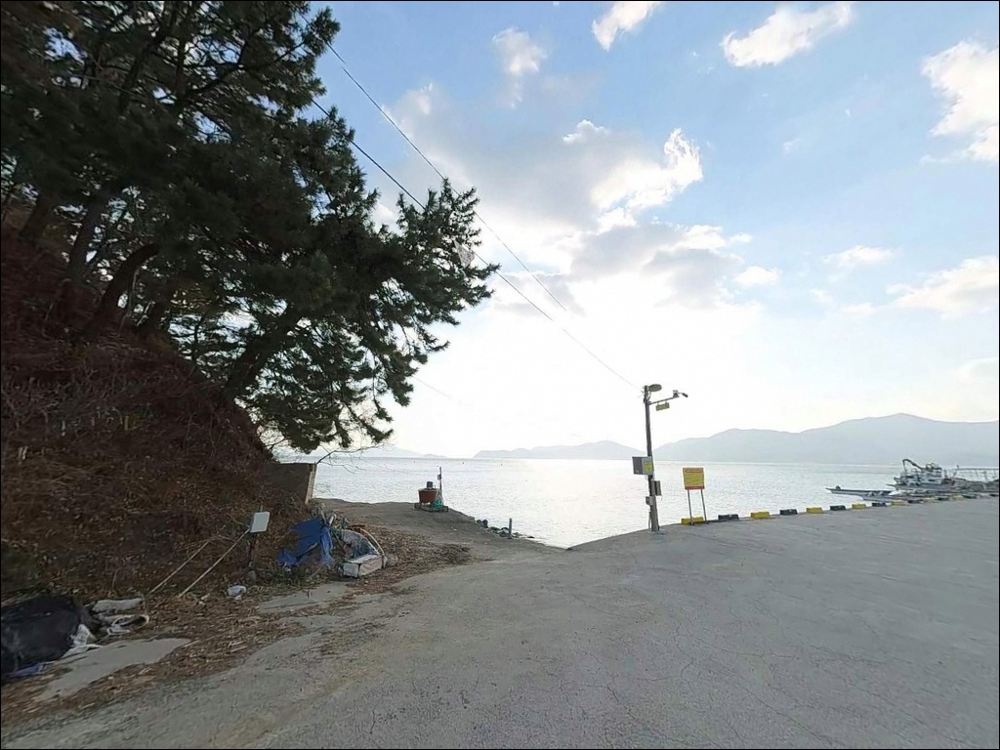
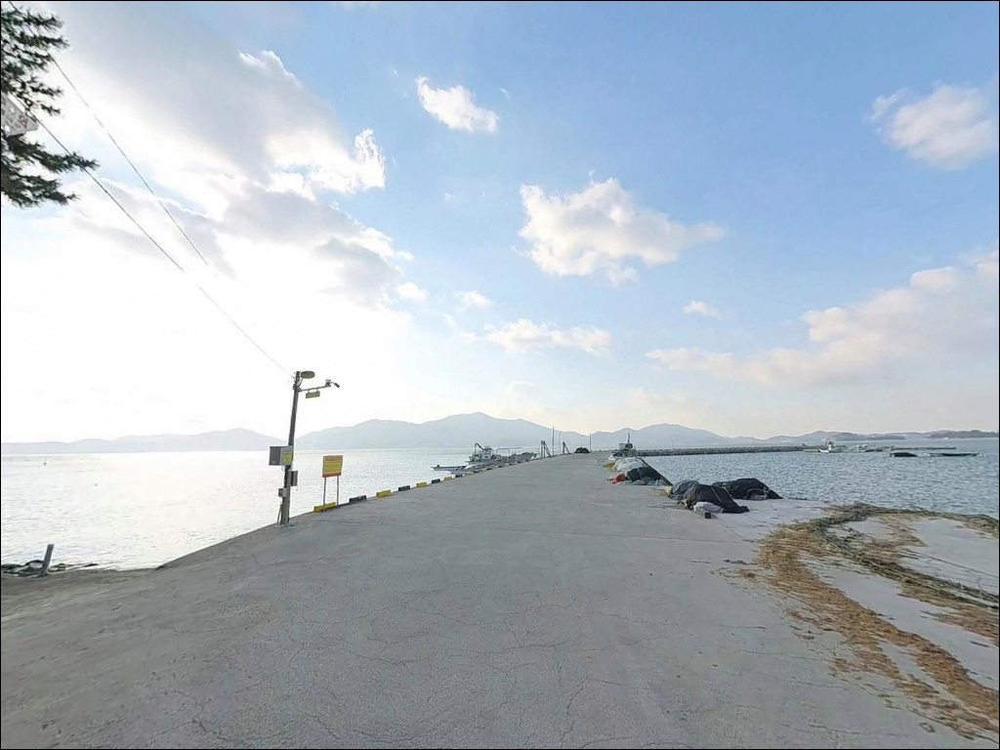
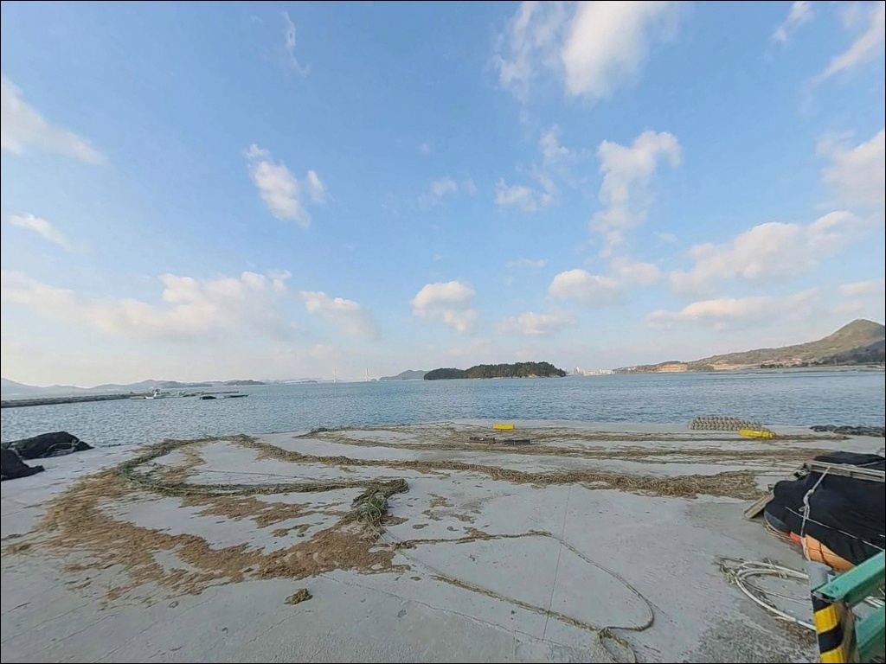
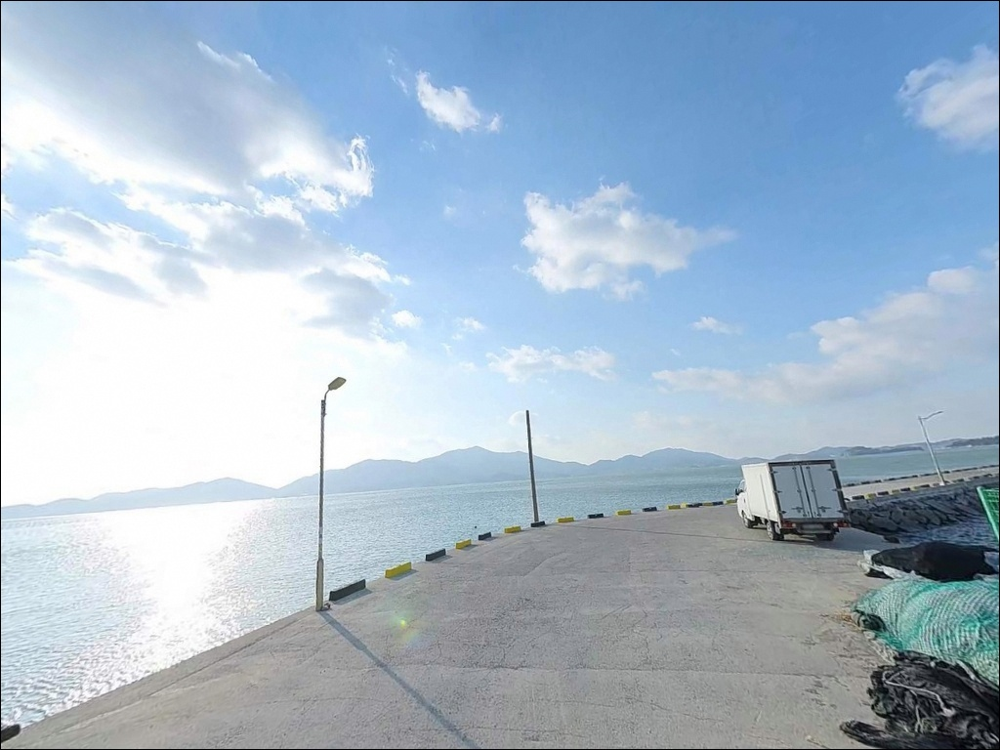
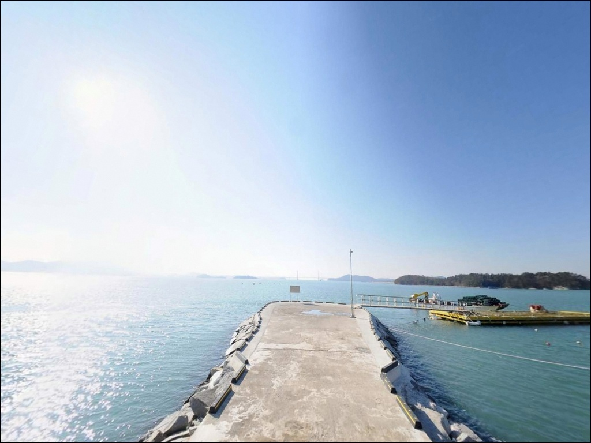
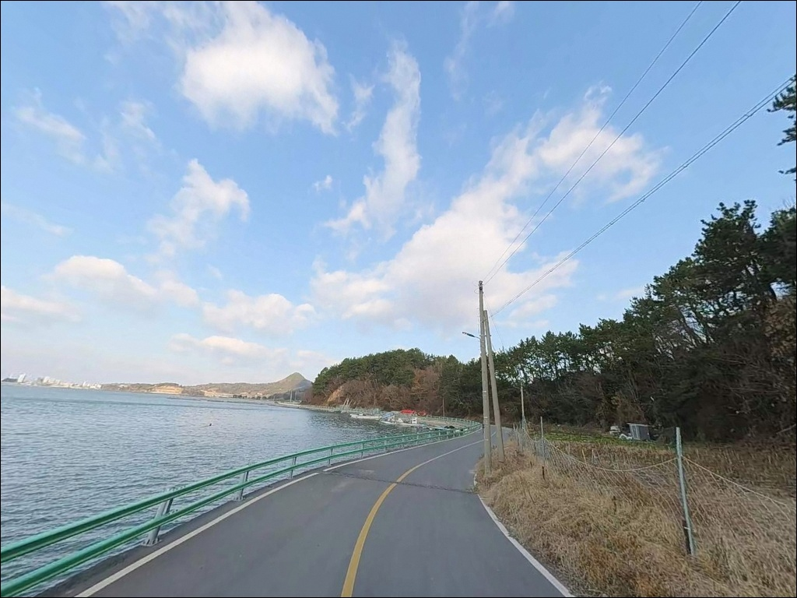

이 페이지에는 광고(제휴 링크 포함)가 있으며, 광고 링크를 통해 구매하면 운영자가 판매 수익 또는 수수료를 받을 수 있습니다. 포인트 사진: 카카오맵 스카이뷰·로드뷰. 이 페이지의 지도·사진 이미지는 카카오맵의 실제 서비스 이미지와 다를 수 있습니다.


간조에 수심 급격히 빠질 때, 고흥 동봉방파제 콧부리에서 노리는 만조 찌낚시
포인트 안내
동봉항(동봉방파제)
전남 고흥군 도양읍 봉암리 234-4
뻘 바닥 방파제에 물때 확인 없이 들어서면
간조 전후로 발 앞 수심이 급격히 빠져
채비를 던질 만한 수심이 남지 않습니다.
동봉방파제는 만조 전후 타이밍이
낚시 성패를 결정하는 구조의 포인트입니다.
이 글은 동봉방파제의 지형 구조,
진입 환경, 물때 판단 기준,
낚시 스타일별 공략 조건에 집중합니다.
조황 단정이나 특정 어종 보장은
이 글의 범위에 포함되지 않습니다.

1. 진입 동선과 차량 접근 조건
동봉방파제는 녹동항 배후 봉암리 해안선을 따라
동쪽으로 진입하는 구조입니다.
도양읍 봉암리 이면도로를 통과하며
진입로 폭은 1~1.5차선 수준의
마을 도로입니다.
일반 승용차와 소형 SUV 기준으로
비포장 구간이나 급경사 없이 진입이 됩니다.
다만 대형 SUV나 캠핑 장비를 실은 차량이라면
마을 도로 진입 전 여유 공간에서
차량 폭을 먼저 판단해 보는 편이 좋습니다.
방파제 진입부에 회차 공간이 확보되어 있으며,
주차는 진입부 공터와
방파제 인접 마을 도로변 확장 구간을
활용하는 방식이 일반적입니다.
어선 이동 동선을 막지 않는 자리가 기본입니다.

2. 차박 환경과 야간 체류 여건
동봉마을 민가가 배후에 위치해
완전한 고립형 환경은 아닙니다.
방파제 입구와 내항 쪽에 가로등이 설치되어 있어
야간 기본 시야는 확보되는 편입니다.
다만 외항 테트라포트 구간은
조명이 닿지 않아 헤드랜턴이 필수입니다.
차량 통행은 낮에는 어선 관련 차량,
야간에는 낚시객 차량이 주를 이루는 구조입니다.
차박 공간은 방파제 진입부 기준
승용 1~2대 정도 정차가 가능한 규모이며,
민가가 가깝기 때문에
야간 소음과 불빛 관리가 필요합니다.
외항이 남해 방향으로 개방된 구조라
남풍·남서풍 계열 기상 악화 시
파도 영향을 직접 받습니다.
출조 전 기상청 해양예보를 확인하고
바람이 강한 날에는 내항 쪽 자리를 선택하는 편이 안전합니다.


3. 주변 편의시설 및 인프라 현황
동봉방파제에서 녹동항까지는 직선 거리 약 600m입니다.
녹동항 일대는 도양읍 중심 생활권으로
편의점, 마트, 식당, 낚시점, 주유소가
차량 5분 내 접근 가능한 거리에 집중되어 있습니다.
녹동항 주변에는 수산물 직판장과
장어거리가 형성되어 있어
출조 전 식사와 장보기를 해결하기 좋습니다.
낚시 소품이나 채비가 부족하다면
녹동 낚시점을 먼저 들르고
동봉방파제로 이동하는 동선이 효율적입니다.
응급 상황 발생 시
녹동항 인근 의료기관까지 차량으로 약 10~15분 거리입니다.
봉암리 마을 내 소규모 구멍가게가 존재하나
전문적인 인프라는 녹동 생활권을 기준으로 준비하는 편이 맞습니다.

4. 물때 모르고 가면 낚시 못 하는 이유
동봉방파제 방문 전에 가장 먼저 확인할 것은
물때입니다.
뻘 바닥 전 구간이라 간조 시
방파제 앞 수심이 급격히 낮아지는 구조이며,
일부 구간은 바닥이 드러납니다.
만조 전후 2시간 안팎이 낚시 적기이며,
밤 시간대에 어종 활성도가 높아집니다.
바다타임에서 봉암리 기준 물때를 확인하고
출발 시각을 만조 전 1~2시간으로 맞추는 것이
이 포인트를 제대로 공략하는 방법입니다.
조류가 살아나는 시간대에
콧부리 발 앞 10m 내외에서
입질 집중도가 높아지는 구조입니다.
외항이 남해 방향으로 열려 있어
기상 변화가 빠를 수 있습니다.
당일 아침 기상청 예보를 한 번 더 확인하고,
뻘 바닥 특성상 채비 손실은 많지 않지만
조류가 변하는 구간에서
봉돌 무게 조절이 필요한 경우가 생깁니다.

5. 지형 기반 낚시 여건 분석
동봉방파제의 핵심은 콧부리(방파제 끝단) 앞에
형성되는 완류대입니다.
조류가 방파제 선단을 돌며
속도가 줄어드는 구간이 생기고,
이 일대가 어종의 먹이 활동 공간이 됩니다.
발 앞 10m 내외 집중 공략이
이 포인트의 기본 운영 방식입니다.
바닥은 전 구간 뻘 지형으로
밑걸림이 거의 없습니다.
반면 지형 변화가 적어
공략 구간을 스스로 좁혀 운영해야 합니다.
방파제 정면 수심은 만조 기준 5~7m 내외이며,
들물과 날물에 따라 수위 차이가 큰 편입니다.
내항은 콘크리트 수직벽 구조로
잔잔한 수면 조건을 유지하며,
외항 쪽은 조류가 통과하는 길목 역할을 합니다.
외항 쪽 수심 변화가 더 뚜렷해
찌낚시와 에깅 운용이 외항 테트라포트 끝단에 집중됩니다.
최신 조황은 가기 전에 꼭 검색해 보시기 바랍니다.


6. 포인트에 어울리는 낚시 스타일
이 포인트에서 가장 잘 맞는 방식은
찌낚시입니다.
감성돔을 주 타깃으로,
조류가 살아나는 만조 전후
외항 테트라포트 끝단을 집중 공략합니다.
수심이 깊지 않아 민장대 운용도 가능하며,
가을철 감성돔 시즌에 활성도가 높아지는 편입니다.
에깅도 이 해역에서 유효한 방식입니다.
갑오징어와 주꾸미를 노리는 에깅 낚시객이
방파제 전역을 공략하는 구조이며,
봄철 갑오징어 시즌과
가을철 주꾸미 시즌에 집중도가 높아집니다.
콧부리 직하와 좌우 10m 범위를 중심으로
공략하는 방식이 이 포인트 지형에 맞습니다.
원투낚시는 뻘 바닥 특성상
밑걸림 없이 운용할 수 있는 장점이 있습니다.
내항 석축이나 외항 방향으로 투척해
도다리, 성대, 붕장어를 기대해 볼 수 있는 구조이며,
조류 방향을 파악한 뒤 집중 구간을 좁혀
운영하는 것이 효율적입니다.

7. 대안 포인트와 플랜 B 동선
동봉방파제 진입이 여의치 않거나
물때가 맞지 않을 때
가장 먼저 이동할 곳은
녹동방파제입니다.
약 600m 거리로 고흥 전 지역에서
낚시인 집중도가 가장 높은 방파제이며,
소록도와 녹동항 사이 물골로
물때에 관계없이 조류가 꾸준히 흐릅니다.
녹동방파제는 수심이 가까운 곳 7m,
먼 곳 12~13m로 깊고,
주차 공간도 갖춰져 있어
접근성이 동봉방파제보다 유리합니다.
릴찌낚시, 루어낚시, 원투낚시 모두 운용이 가능해
낚시 스타일을 가리지 않는 대안입니다.
좀 더 이동 여유가 있다면
도덕면 오마리의 은전방파제도 검토해 볼 만합니다.
약 8~10km 거리에 대형 방파제 두 개를 갖춘 포인트로,
외항 중심 감성돔 포인트가 형성되어 있습니다.
간조 시 갯벌 노출 구간이 있어
물때 파악이 필요하다는 점은 동일합니다.

만조 타이밍 하나로
동봉방파제가 달라집니다
뻘 바닥 방파제 특성을 이해하고
만조 전후를 맞춰 들어오는 낚시인이라면
동봉방파제는 꽤 쓸 만한 포인트입니다.
밑걸림 없이 운용 가능한 뻘 바닥,
콧부리 발 앞 10m 이내에 형성되는 완류대,
감성돔과 갑오징어를 노릴 수 있는
지형 조건이 갖춰져 있습니다.
반면 물때 확인 없이 찾아가거나
대형 차량으로 마을 도로 진입을 시도하면
낚시도 주차도 어려워지는 상황을
맞닥뜨릴 수 있습니다.
물때 확인, 진입로 사전 파악, 자급 준비,
이 세 가지를 갖추면
녹동항 바로 옆에서 한적하게 즐기는
차박 겸 출조가 가능한 포인트입니다.
번잡한 녹동항 대신 조용한 마을 방파제에서
하룻밤 머물며 만조 전후를 노리고 싶은 낚시인이라면,
동봉방파제를 플랜으로 잡아두기에 충분한 곳입니다.